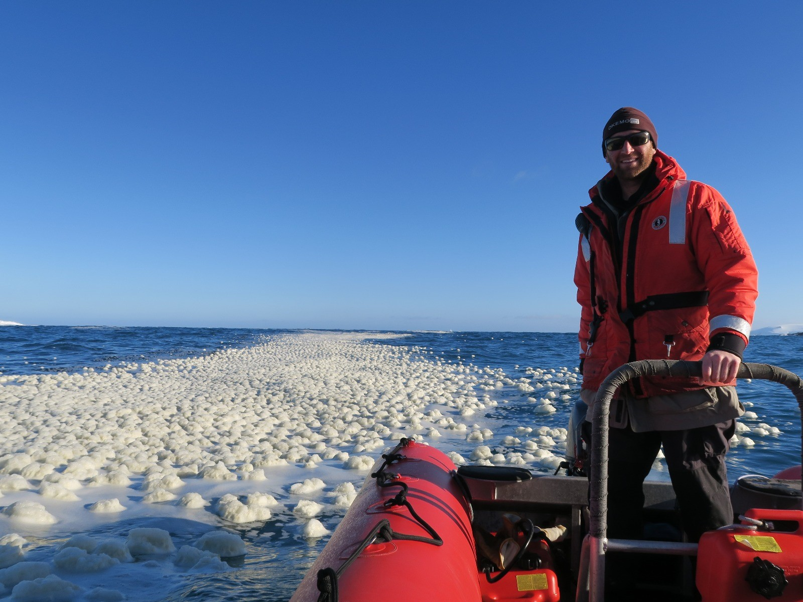

Migratory species present unique challenges and opportunities for both ecologists and resource managers. This is particularly true for oceanic predators migrating through expansive, highly-dynamic habitats. In my research, I explore many elements of such migratory behavior:
- Environmental and oceanographic processes influencing migration
- The role of social information and collective behavior in migration
- Tools for observing migratory behavior across scales
- Equitable and dynamic habitat management for protection of migratory species and human activities
I currently conduct this research as a PhD Candidate at Hopkins Marine Station of Stanford University, where I am the David and Lucile Packard Foundation Stanford Graduate Fellow and a NSF Graduate Research Fellow. My PhD research builds upon my previous work with the the Woods Hole Oceanographic Institution and the Natural Resources Defense Council.

Image credits: All photos by Will Oestreich unless otherwise indicated. Whale photos taken under NMFS Permit 16111.